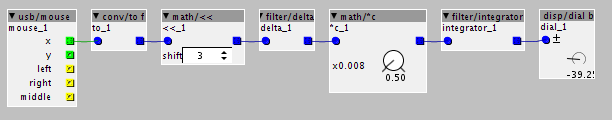

Hi,
I have been having some fun with the usb/mouse object to output oscillator pitch on the x axis, VCF frequency on the y axis and the left button to trigger a VCA-EG. However the range over which the oscillator pitch works is very narrow (a couple of centimetres, then it resets itself, like a modulo operation. I tried using a divider object by 4 and 8, etc, but this does not resolve the issue.
Any ideas on how to scale the mouse movement distance so the pitch range is covered over a much larger distance?
Usb/mouse scaling ranges?
gabriel
#1
Can't generate MIDI output
johannes
#2
Tried to come up with a solution using standard objects, here it is:

it's not a really elegant solution, or easy to explain how it works in brief.
For what it is worth, here some explanation:
the x output wraps around, converting it to fractional format and left-shifting the value by 3 places, it wraps around at the same spot the integer internally representing the fractional format wraps around. The delta filter then gives an unwrapped speed value. This speed value can be scaled down and integration converts speed into position again.
The idea behind the wrapping position output for "usb/mouse" is that it enables infinite travel.
Outputting speed rather than position from "usb/mouse" would have been a cleaner design pattern.
gabriel
#3
Thank you Johannes. I now realise that solving this was certainly more complex than I thought it would be. Can't wait to try it out.
 Grandmaster Flash would approve!
Grandmaster Flash would approve!